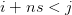

Exercícios
Resposta.

Solução: [5, 9.25, 11.5, 11.75, 10]

Solução: ![[5,7.375,9.25,10.625,11.5,11.875,11.75,1.125,10]](main4547x.png)

E 11.0.10. Considere o seguinte problema de valor de contorno para a
equação de calor no estado estacionário:

Defina

onde

e

. Aproxime a derivada
segunda por um esquema de segunda ordem e transforme a equação diferencial
em um sistema de equações lineares. Resolva o sistema linear obtido.
Resposta. 120. 133.56 146.22 157.83 168.22 177.21 184.65 190.38 194.28 196.26 196.26 194.26 190.28 184.38 176.65
167.21 156.22 143.83 130.22 115.56 100.

E 11.0.11. Considere o seguinte problema de valor de contorno para a
equação de calor no estado estacionário:

Defina

onde

e

. Aproxime a derivada
segunda por um esquema de segunda ordem, a derivada primeira na fronteira
por um esquema de primeira ordem e transforme a equação diferencial em
um sistema de equações lineares. Resolva o sistema linear obtido.
Resposta. 391.13 391.13 390.24 388.29 385.12 380.56 374.44 366.61 356.95 345.38 331.82 316.27 298.73 279.27 257.99
234.99 210.45 184.5 157.34 129.11 100.

E 11.0.12. Considere o seguinte problema de valor de contorno para a
equação de calor no estado estacionário com um termo não linear de
radiação:

Defina  onde

e

. Aproxime a derivada
segunda por um esquema de segunda ordem e transforme a equação diferencial
em um sistema de equações não lineares. Resolva o sistema obtido. Expresse a
solução com dois algarismos depois do separador decimal. Dica: Veja problema
38 da lista 2, seção de sistemas não lineares.
Resposta. 0., 6.57, 12.14, 16.73, 20.4, 23.24, 25.38, 26.93 , 28, 28.7, 29.06, 29.15, 28.95, 28.46, 27.62 , 26.36, 24.59, 22.18,
19.02, 14.98, 10.

E 11.0.13. Considere o seguinte problema de valor de contorno para a
equação de calor no estado estacionário com um termo não linear de radiação
e um termo de convecção:

Defina

onde

e

. Aproxime a derivada
segunda por um esquema de segunda ordem, a derivada primeira na fronteira
por um esquema de primeira ordem, a derivada primeira no interior por um
esquema de segunda ordem e transforme a equação diferencial em um sistema
de equações não lineares. Resolva o sistema obtido.
Resposta. u(0)=31.62, u(1)=31.50, u(1.9)=18.17

E 11.0.14. Considere o seguinte problema de valor de contorno:

Defina

onde

e

. Aproxime a
derivada segunda por um esquema de segunda ordem, a derivada primeira na
fronteira por um esquema de primeira ordem, a derivada primeira no interior
por um esquema de segunda ordem e transforme a equação diferencial em
um sistema de equações não lineares. Resolva o sistema obtido.
Resposta. u(1)=1.900362, u(2.5)=1.943681, u(4)=1.456517


 onde
onde  e
e  . Aproxime a
derivada segunda por um esquema de segunda ordem e transforme a equação
diferencial em um sistema de equações lineares. Escreva este sistema linear
na forma matricial e resolva-o. Faça o mesmo com o dobro de subintervalos,
isto é, com malha de 9 pontos.
. Aproxime a
derivada segunda por um esquema de segunda ordem e transforme a equação
diferencial em um sistema de equações lineares. Escreva este sistema linear
na forma matricial e resolva-o. Faça o mesmo com o dobro de subintervalos,
isto é, com malha de 9 pontos.